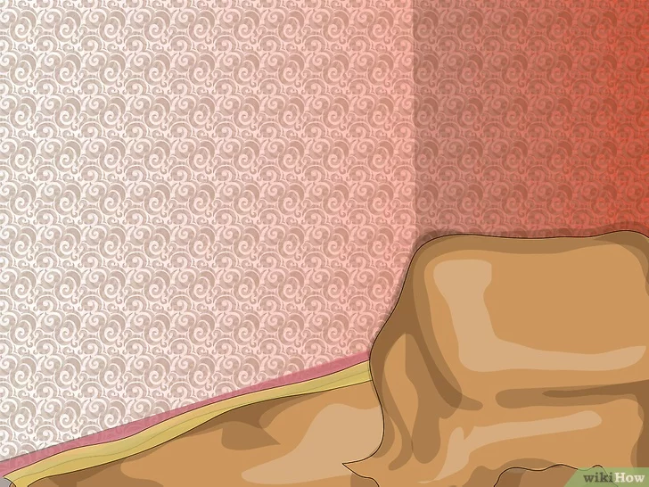
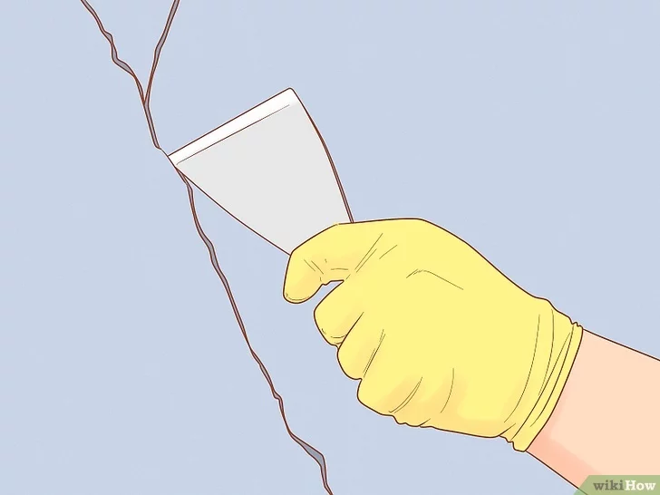
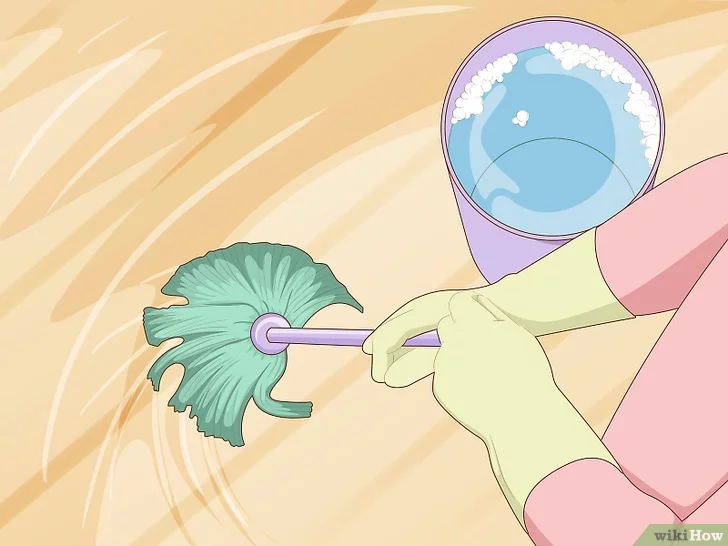
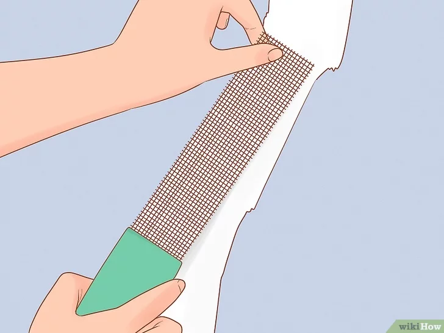
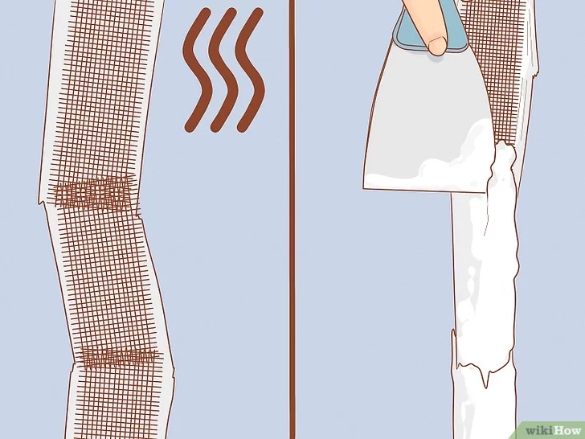
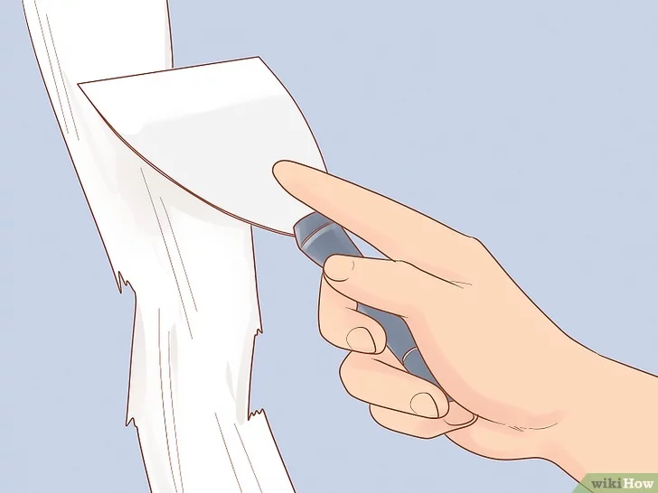
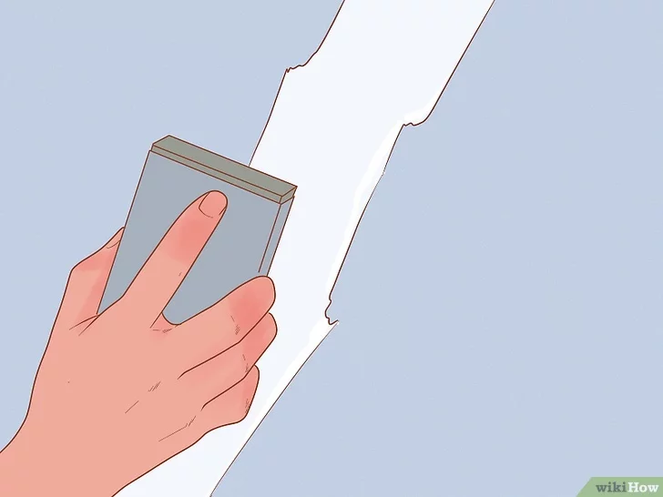
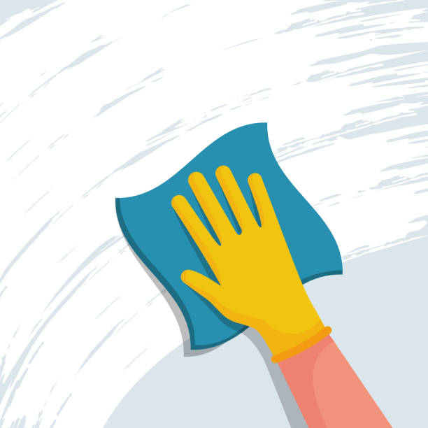
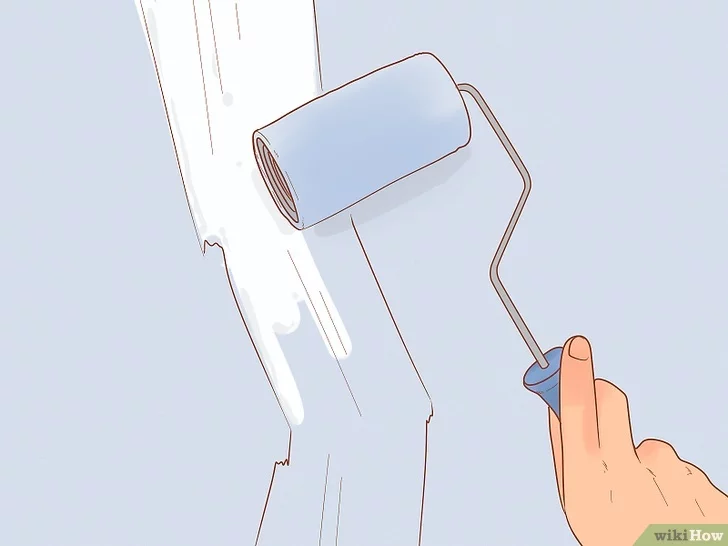

Tiempo estimado: 2-3 horas (incluyendo tiempos de secado).
Dificultad: Fácil (Nivel 1 de 5).
| Elemento | Uso/Características | ¿Dónde comprar? |
|---|---|---|
| Masilla de Reparación | Masilla lista para usar o en polvo. Para grietas finas. | Ferreterías grandes, tiendas de bricolaje. |
| Espátula(s) | Una pequeña (5 cm) y una mediana (10-15 cm). | Ferreterías. |
| Cinta de Malla (Opcional) | Cinta de fibra de vidrio autoadhesiva. Solo para grietas grandes o recurrentes. | Ferreterías, centros de bricolaje. |
| Papel de Lija | Grano fino (120-180). | Ferreterías. |
| Trapo o Esponja | Para limpiar el polvo. | Tiendas del hogar. |
| Guantes y Gafas | Para protegerse del polvo. | Ferreterías, farmacias. |
| Pintura y Brocha/Rodillo | Del color exacto de la pared. | Tiendas de pintura. |
| Paso | Descripción de la Acción | Ilustración |
|---|---|---|
| Paso 1.1 | Protege la zona: Cubre el suelo y los muebles cercanos con plásticos o periódicos. |  |
| Paso 1.2 | Abre la grieta (forma de "V"): Usando el borde de la espátula pequeña, raspa a lo largo de la grieta para ensancharla ligeramente. Esto asegura que la masilla penetre bien. |  |
| Paso 1.3 | Limpia el polvo: Elimina todo el polvo y los restos sueltos dentro y alrededor de la grieta con un trapo o una brocha. La superficie debe estar limpia y seca. |  |
| Paso | Descripción de la Acción | Ilustración |
|---|---|---|
| Paso 2.1 | (Solo para grietas grandes): Aplica la cinta de malla. Si la grieta es ancha, pega la cinta autoadhesiva justo encima. |  |
| Paso 2.2 | Carga y aplica la primera capa: Toma masilla y presiónala dentro de la grieta (y sobre la cinta). Debe quedar bien compactada. |  |
| Paso 2.3 | Alisa y retira el exceso: Usa la espátula mediana (15 cm) para alisar la masilla, manteniéndola en un ángulo de 45 grados. Debe quedar al ras de la pared. |  |
| Paso 2.4 | Deja secar: Sigue las instrucciones del fabricante. ¡No lijar antes de que esté completamente seco! |
| Paso | Descripción de la Acción | Ilustración |
|---|---|---|
| Paso 3.1 | Lija suavemente: Una vez seco, lija la zona con papel de lija de grano fino (120-180) hasta que la superficie quede uniforme. Usa guantes y gafas. |  |
| Paso 3.2 | Limpia el polvo: Elimina todo el polvo del lijado con un trapo. |  |
| Paso 3.3 | Pinta: Aplica la pintura del color exacto. Probablemente necesitarás 2 capas para un acabado uniforme. Deja secar bien entre capas. |  |